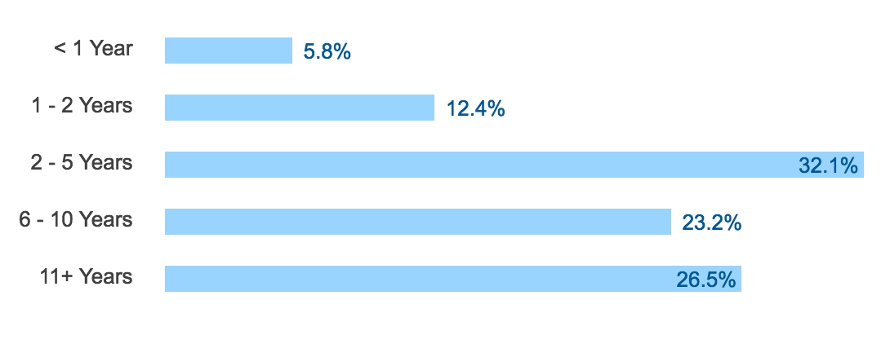

Making a Personal Portfolio with GitHub Pages
Created by Jessica Bell / @SirJessTheBrave
Agenda
- Who Am I?
- Who are you?
- Git, GitHub, GitHub Pages
- Your Portfolio: Getting Started
- Setting up your GitHub Pages
- Your Personal Brand
Who Am I?
- Jessica Bell
- Web Developer at Deloitte Digital
- Self taught: Degree in International Relations, General Assembly Bootcamp for Front End Web Development
- Community Leadership: DC FemTech, DC Tech Meetup
- GitHub: SirJessTheBrave
- Twitter: @sirJessTheBrave
Spirit Animal

Who Are You?
- Name
- Occupation/grade/thing that occupies most of your time
- Why you are hear and what you want to learn
- What is your Spirit Animal/persona/thing you love
Lets Go!

Your Portfolio: Getting Started
Why you need a personal site
Stand Out
Stand Out
Inspiration
Your Personal Brand

What kind of developer you want to be
Networking: You're not in this alone

DC Tech
Show your value
Git, GitHub, GitHub Pages
Setting up your GitHub Pages
Stop! Question-time!